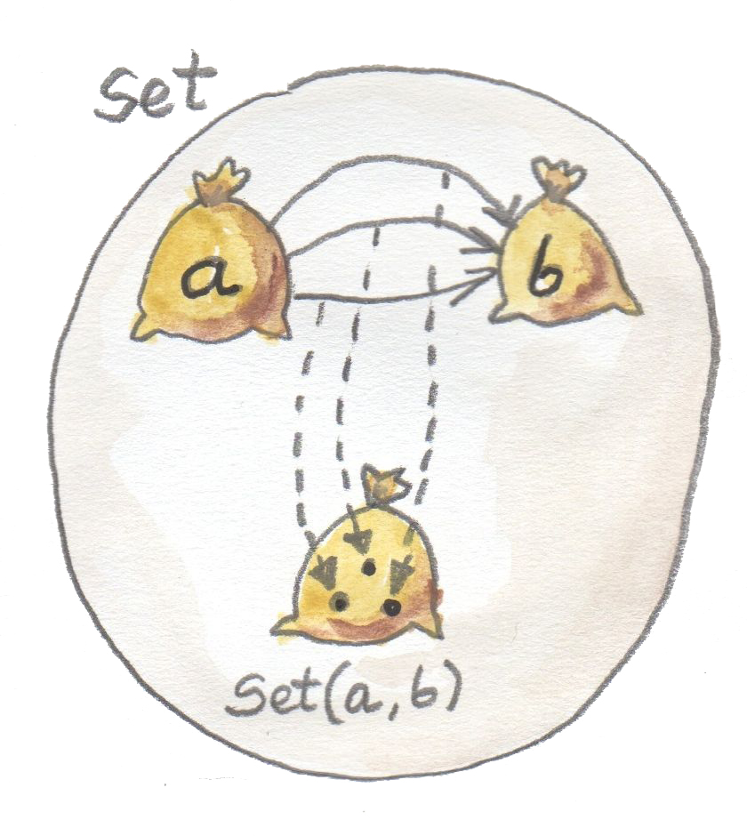
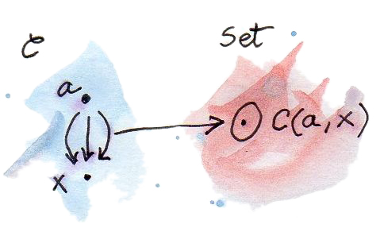
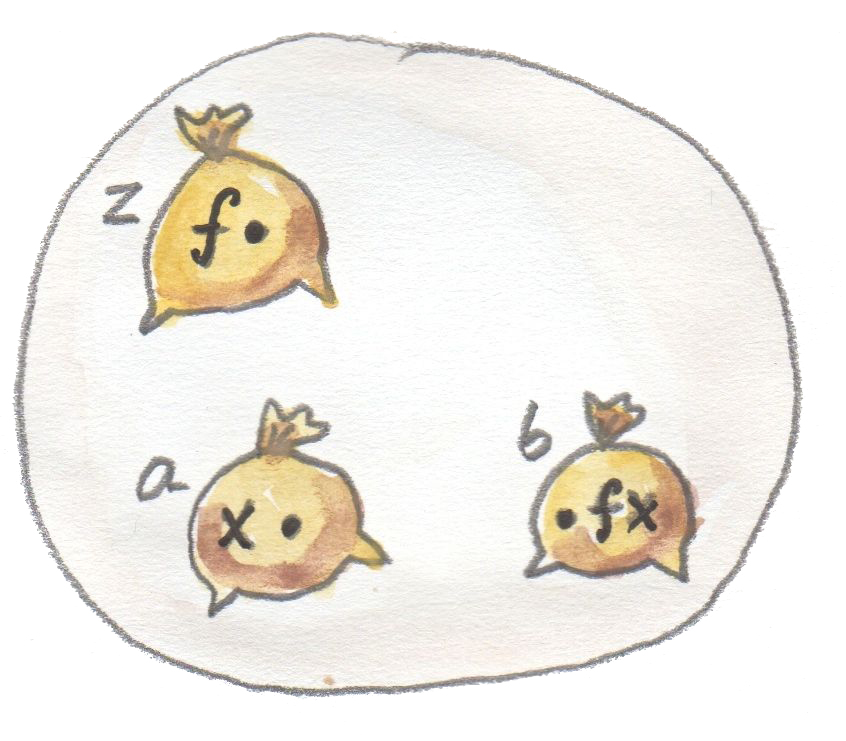
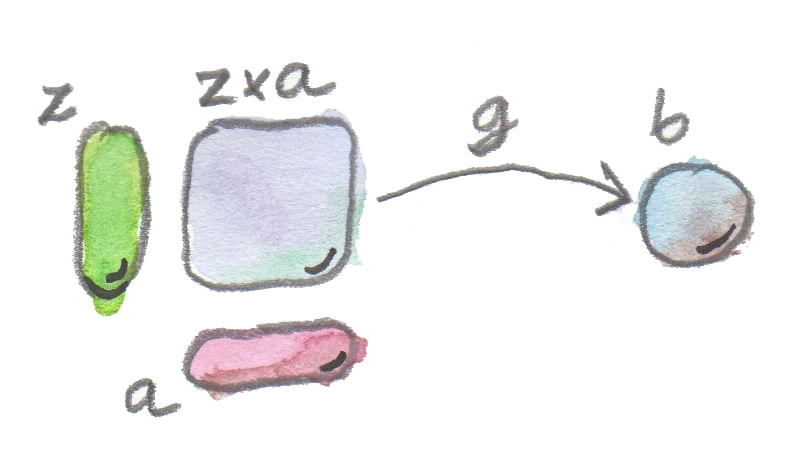
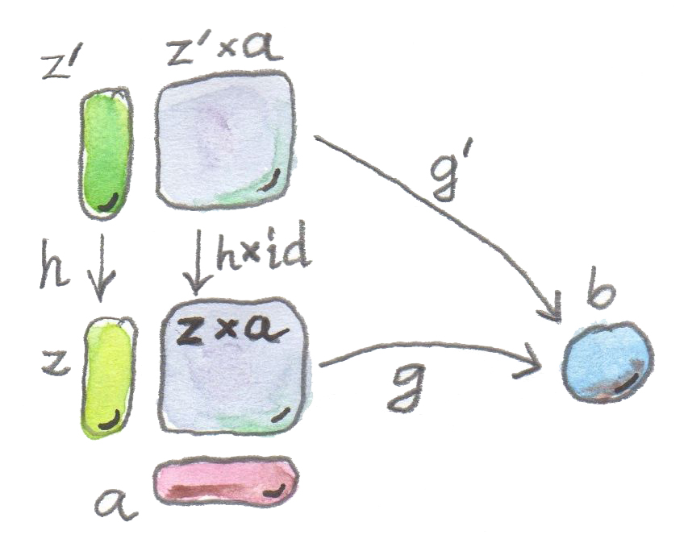
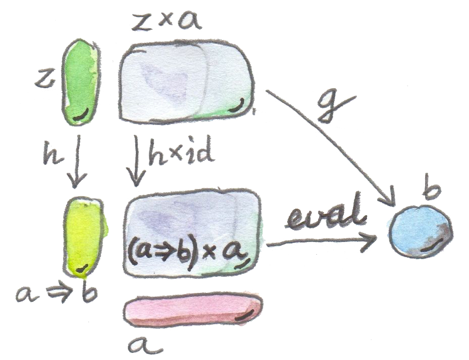

到目前为止，我一直略过函数类型的含义。函数类型与其他类型有所不同。
例如，Integer 只是整数集合，Bool 是二元素集合。但函数类型 a→b 不止如此：它是对象 a 与 b 之间的态射集合。任意范畴中两对象之间的态射集合称为 hom 集（hom-set）。碰巧在 Set 范畴中，每个 hom 集本身也是同一范畴里的对象——因为它终究是一个集合。

其他范畴并非如此，其中的 hom 集位于范畴之外，甚至就称为外部 hom 集（external hom-set）。

Set 范畴的这种自指性质使函数类型显得特殊。不过，至少在某些范畴中，可以构造表示 hom 集的对象；这种对象称为内部 hom 对象（internal hom-object）。
泛构造
暂时忘掉函数类型是集合，尝试从零构造函数类型，或者更一般地构造内部 hom 对象。照例，我们从 Set 范畴获取启发，但小心避免使用集合的特殊性质，使构造自动适用于其他范畴。
函数类型与参数类型、结果类型存在关系，因此可以视为复合类型。我们已见过利用对象关系构造复合类型：用泛构造定义积类型与余积类型。定义函数类型也能使用同一技巧。所需模式包含三个对象：正在构造的函数类型、参数类型和结果类型。
连接这三个类型的显然模式称为函数应用（function application）或求值（evaluation）。给定函数类型的候选 z（若不在 Set 中，它只是与其他对象一样的对象）以及参数类型 a，应用把这对对象映射到结果类型 b。三个对象中，参数类型与结果类型已经固定。
我们还有一个映射——应用。怎样把它纳入模式？若允许观察对象内部，可以把函数 f（z 的元素）与参数 x（a 的元素）配对，映射到 f x（f 应用于 x，它是 b 的元素）。

但无需处理单个 pair (f,x)，也可以讨论函数类型 z 与参数类型 a 的整个积。积 z×a 是对象，可以选择从它到 b 的箭头 g 作为应用态射。在 Set 中，g 就是把每个 pair (f,x) 映射到 f x 的函数。
模式由此确定：两个对象 z、a 的积，通过态射 g 连接到另一个对象 b。

这个模式是否足够精确，能由泛构造挑出函数类型？并非在每个范畴中都能，但在我们关心的范畴中可以。另一个问题是：能否先不定义积，就定义函数对象？有些范畴没有积，或者并非每对对象都有积。答案是否定的：没有积类型，就没有函数类型。讨论指数对象时还会回到这一点。
回顾泛构造：先从对象与态射的模式开始。它像不精确的查询，通常产生大量匹配。尤其在 Set 中，几乎一切都与一切相连。可以任取对象 z，构造它与 a 的积，并且通常都有从积到 b 的函数（除非 b 是空集）。
此时使用秘密武器：排名。通常要求候选对象之间存在唯一映射，以某种方式对构造进行因子分解。这里规定：z 连同从 z×a 到 b 的态射 g，优于另一个带有应用 g′ 的 z′，当且仅当存在从 z′ 到 z 的唯一映射 h，使 g′ 的应用经由 g 因子分解。（提示：看着图再读这句话。）

下面是棘手之处，也是我把这个泛构造推迟至今的主要原因。给定态射 h: z′→z，我们想补全那张同时含有 z′×a 与 z×a 的图。真正需要的是从 z′×a 到 z×a 的映射。讨论过积的函子性后，我们知道怎样构造它。因为积本身是函子（更准确说是自双函子），所以可以提升态射对；不仅能构造对象的积，也能构造态射的积。
积的第二项 a 不变，因此提升态射对 (h,id)，其中 id 是 a 上的恒等。
这样便能从另一个应用 g′ 中因子分解出应用 g：
关键是积对态射的作用。
泛构造的第三部分，是选择普遍意义下最好的对象。把它称为 a⇒b（把它看作一个对象的符号名，不要与 Haskell 类型类约束混淆；稍后讨论其他命名方式）。该对象带有自己的应用——从 (a⇒b)×a 到 b 的态射，称为 eval。若任何其他函数对象候选都能唯一映射到它，并使候选应用态射 g 经由 eval 因子分解，那么 a⇒b 就是最好的对象。

形式化地说：
从 a 到 b 的函数对象（function object），是对象 a⇒b 以及态射 eval: ((a⇒b)×a)→b；对任何带有态射 g: z×a→b 的对象 z，都存在唯一态射 h: z→(a⇒b)，使 g 经由 eval 因子分解：g = eval ∘ (h×id)。
当然，给定范畴中的任意对象 a、b，不保证这样的 a⇒b 都存在。但在 Set 中总是存在；而且在 Set 中，这个对象与 hom 集 Set(a,b) 同构。
因此在 Haskell 中，我们把函数类型 a -> b 解释为范畴函数对象 a⇒b。
柯里化
再次观察函数对象的全部候选。这次把态射 g 看成 z、a 两个变量的函数：
从积出发的态射，是最接近双变量函数的东西。尤其在 Set 中，g 是从一对值——分别来自集合 z 与 a——出发的函数。
另一方面，泛性质告诉我们，每个这样的 g 都对应唯一态射 h，把 z 映射到函数对象 a⇒b：
在 Set 中，这表示 h 接受一个 z 类型变量，返回从 a 到 b 的函数，因此 h 是高阶函数。这个泛构造在双变量函数与返回函数的单变量函数之间建立一一对应，称为柯里化（currying）；h 称为 g 的柯里化版本。
对应是一一的：任意 g 都有唯一 h；给定任意 h，也总能用公式重新构造双参数函数 g：
g 可称为 h 的反柯里化（uncurried）版本。
柯里化几乎内建于 Haskell 语法。返回函数的函数：
a -> (b -> c)常被理解为双变量函数。我们正是这样阅读不带括号的签名：
a -> b -> c这种解释也体现在多参数函数的定义方式中：
catstr :: String -> String -> String
catstr s s' = s ++ s'同一个函数可以写成返回 lambda 的单参数函数：
catstr' s = \s' -> s ++ s'两个定义等价，都能只应用一个参数，产生单参数函数：
greet :: String -> String
greet = catstr "Hello "严格说，真正的双变量函数接受一个 pair（积类型）：
(a, b) -> c两种表示之间的转换很平凡，执行转换的两个高阶函数自然叫 curry 与 uncurry：
curry :: ((a, b) -> c) -> (a -> b -> c)
curry f a b = f (a, b)以及：
uncurry :: (a -> b -> c) -> ((a, b) -> c)
uncurry f (a, b) = f a b注意，curry 就是函数对象泛构造的因子分解器（factorizer）。改写成下面形式会更明显：
factorizer :: ((a, b) -> c) -> (a -> (b -> c))
factorizer g = \a -> (\b -> g (a, b))（提醒一下：因子分解器从候选产生进行因子分解的函数。）
在 C++ 等非函数式语言中，柯里化可行但不平凡。可以把 C++ 多参数函数视为对应 Haskell 中接受元组的函数（更让人困惑的是，C++ 还能定义显式接受 std::tuple 的函数、可变参数函数和接受初始化列表的函数）。
可以用模板 std::bind 偏应用 C++ 函数。例如给定双字符串函数：
std::string catstr(std::string s1, std::string s2) {
return s1 + s2;
}可定义单字符串函数：
using namespace std::placeholders;
auto greet = std::bind(catstr, "Hello ", _1);
std::cout << greet("Haskell Curry");Scala 比 C++ 或 Java 更函数式，位置介于二者之间。若预期正在定义的函数会被偏应用，可以用多组参数列表定义：
def catstr(s1: String)(s2: String) = s1 + s2当然，这要求库作者具有一定远见。
指数对象
数学文献中，两对象 a、b 之间的函数对象或内部 hom 对象，常称为指数对象（exponential），记作 ba。注意参数类型位于指数位置。起初这看起来奇怪，但只要思考函数与积的关系就很合理。内部 hom 对象的泛构造必须使用积，而联系还不止于此。
考察有限类型之间的函数最容易看清这一点。有限类型拥有有限个值，例如 Bool、Char，甚至 Int 或 Double。这种函数原则上能被完全记忆化，或转成供查询的数据结构。这正是“函数作为态射”与“函数类型作为对象”等价的本质。
例如，一个从 Bool 出发的纯函数完全由一对值确定：一个对应 False，一个对应 True。从 Bool 到 Int 的全部函数集合，就是所有 Int pair 的集合，等同于积 Int×Int，或者创造性地写作 Int²。
再看 C++ 的 char，它包含 256 个值（Haskell 的 Char 更大，因为使用 Unicode）。C++ 标准库的一部分函数通常以查表实现，例如 isupper 或 isspace；这些表等价于 256 个布尔值的元组。元组是积类型，所以这里是 256 个 bool 的积：bool×bool×…×bool。算术中，重复乘积定义幂。把 bool 自乘 256（或 char）次，就得到 bool 的 char 次幂，即 boolchar。
由 256 个 bool 构成的元组类型有多少个值？恰好是 2256。这也是从 char 到 bool 的不同函数数量，每个函数对应一个唯一的 256 元组。同理，从 bool 到 char 的函数有 256² 个，依此类推。函数类型的指数记法在这些例子中完全合理。
我们大概不会完全记忆化从 int 或 double 出发的函数。但函数与数据类型的等价仍然存在，只是不总具有实践意义。还有列表、字符串、树等无限类型；急切记忆化从这些类型出发的函数需要无限存储。不过 Haskell 是惰性语言，惰性求值的无限数据结构与函数之间界限模糊。这种函数—数据对偶解释了为何 Haskell 函数类型等同于范畴指数对象——后者更接近我们对数据的理解。
笛卡尔闭范畴
虽然我会继续用集合范畴作为类型与函数的模型，但值得指出，还有更大一族范畴可用于此目的。它们称为笛卡尔闭范畴（Cartesian closed category，CCC），Set 只是其中一例。
笛卡尔闭范畴必须包含：
- 终对象；
- 任意一对对象的积；
- 任意一对对象的指数对象。
若把指数看成重复积（可能无限次），可把笛卡尔闭范畴理解为支持任意元数的积。特别地，终对象可看成零个对象的积，或某对象的零次幂。
从计算机科学角度看，笛卡尔闭范畴有趣之处在于：它们提供了简单类型 lambda 演算的模型，而后者是所有有类型编程语言的基础。
终对象和积分别有对偶：始对象和余积。一个还支持这两者、并且积对余积分配的笛卡尔闭范畴：
(b+c)×a = b×a + c×a
称为双笛卡尔闭范畴（bicartesian closed category）。下一节会看到，以 Set 为典型例子的双笛卡尔闭范畴具有一些有趣性质。
指数与代数数据类型
把函数类型解释为指数对象，与代数数据类型的体系非常契合。事实证明，高中代数中关于零、一、和、积、指数的所有基本恒等式，在任意双笛卡尔闭范畴里几乎原样成立；只需分别把它们理解为始对象、终对象、余积、积和指数。我们还没有证明所需的工具（如伴随或 Yoneda 引理），但仍可把这些等式列为宝贵直觉。
零次幂
范畴解释中，以始对象代替 0，以终对象代替 1，以同构代替相等，指数则是内部 hom 对象。这个指数表示从始对象到任意对象 a 的态射集合。按始对象定义，恰好存在一个这种态射，所以 hom 集 C(0,a) 是单元素集合。单元素集合是 Set 中的终对象，因此等式在 Set 中显然成立；而这里断言它在任意双笛卡尔闭范畴中都成立。
Haskell 中，以 Void 代替 0，以单位类型 () 代替 1，以函数类型代替指数。断言是：从 Void 到任意类型 a 的函数集合等价于单位类型——单元素集合。换言之，只存在一个 Void -> a 函数，即此前见过的 absurd。
这稍显棘手，原因有二。首先，Haskell 中没有真正的空类型——每种类型都包含“永不结束的计算结果”即底。其次，所有 absurd 实现都等价，因为无论怎样实现，都没有人能执行它；不存在可传给 absurd 的值。（若成功传入永不结束的计算，它也永远不会返回。）
一的任意次幂
在 Set 中，这个等式重述终对象定义：从任意对象到终对象都有唯一态射。一般而言，从 a 到终对象的内部 hom 对象与终对象自身同构。
Haskell 中，从任意类型 a 到 unit 只有一个函数，就是前面见过的 unit。也可以把它看成 const 偏应用于 ()。
一次幂
这重述了从终对象出发的态射可以选出对象 a 的“元素”。这种态射的集合与对象自身同构。在 Set 和 Haskell 中，这就是集合 a 的元素与选出这些元素的函数 () -> a 之间的同构。
和的指数
范畴上说，从两对象余积出发的指数，同构于两个指数之积。Haskell 中，这个代数等式有很实际的解释：从两种类型之和出发的函数，等价于分别从每种类型出发的一对函数。这就是在和类型上定义函数时使用的分支分析。与其用 case 子句写一个函数，通常会拆成两个（或更多）定义，分别处理每个类型构造器。例如从和类型 Either Int Double 出发的函数：
f :: Either Int Double -> String可以定义成分别从 Int 与 Double 出发的一对函数：
f (Left n) =
if n < 0
then "Negative int"
else "Positive int"
f (Right x) =
if x < 0.0
then "Negative double"
else "Positive double"这里 n 是 Int，x 是 Double。
指数的指数
这只是完全用指数对象表达柯里化：返回函数的函数，等价于从积出发的函数（双参数函数）。
积上的指数
Haskell 中，返回 pair 的函数等价于一对函数，每个函数产生 pair 的一个分量。
这些简单的高中代数恒等式竟能提升到范畴论，并在函数式编程中获得实际应用，实在不可思议。
Curry–Howard 同构
我已提过逻辑与代数数据类型的对应：Void 与单位类型 () 分别对应假与真；积类型、和类型分别对应逻辑合取 ∧（AND）与析取 ∨（OR）。在这套体系中，刚定义的函数类型对应逻辑蕴含 ⇒。也就是说，类型 a -> b 可读成“如果 a，那么 b”。
根据 Curry–Howard 同构（Curry–Howard isomorphism），每种类型都能解释为命题——可能为真或为假的陈述或判断。类型有居民时命题为真，无居民时为假。尤其是，若对应的函数类型有居民，即存在该类型的函数，那么逻辑蕴含为真。因此函数实现就是定理证明；编写程序等价于证明定理。来看几个例子。
取函数对象定义中的 eval，其签名为：
eval :: ((a -> b), a) -> b它接受由函数及其参数组成的 pair，产生相应类型的结果。这是态射 eval: (a⇒b)×a→b 的 Haskell 实现，而该态射定义了函数类型 a⇒b（或指数对象 ba）。借助 Curry–Howard 同构，把签名翻译成逻辑谓词：
这句话读作：若从 a 可推出 b 为真，并且 a 为真，那么 b 必然为真。它符合直觉，自古就称为肯定前件（modus ponens）。可通过实现函数来证明：
eval :: ((a -> b), a) -> b
eval (f, x) = f x若给我一个 pair，包含接受 a 返回 b 的函数 f，以及类型 a 的具体值 x，我只需把 f 应用于 x，就能产生类型 b 的具体值。实现这个函数便说明类型 ((a -> b),a) -> b 有居民；在我们的逻辑中，肯定前件为真。
再看一个显然为假的谓词：若 a 或 b 为真，则 a 必为真：
这显然错误，因为可以选择假的 a 与真的 b 作为反例。
利用 Curry–Howard 同构把谓词映射成函数签名：
Either a b -> a无论怎样尝试都无法实现这个函数：收到 Right 值时，无法产生类型 a 的值。（记住，这里讨论纯函数。）
最后看 absurd 的含义：
absurd :: Void -> aVoid 翻译成假，于是得到：
从假可以推出任何命题（ex falso quodlibet）。下面是这个陈述（函数）的一种 Haskell 证明（实现）：
absurd (Void a) = absurd a其中 Void 定义为：
newtype Void = Void Void照例，Void 很棘手。这个定义使值无法构造，因为构造一个值之前必须先提供一个同类值。因此 absurd 永远无法调用。
这些例子很有趣，但 Curry–Howard 同构有实际用途吗？日常编程中大概不多。不过 Agda、Rocq（原名 Coq）等编程语言确实利用它来证明定理。
计算机不仅帮助数学家工作，也在变革数学的基础。这个领域当前的热门研究叫同伦类型论（Homotopy Type Theory），它由类型论发展而来，其中充满布尔值、整数、积与余积、函数类型等。仿佛为了消除一切怀疑，这套理论正在 Rocq 与 Agda 中形式化。计算机正以不止一种方式改变世界。
参考资料
- Ralf Hinze、Daniel W. H. James，Reason Isomorphically!。该论文证明了本章提到的全部范畴论版高中代数恒等式。